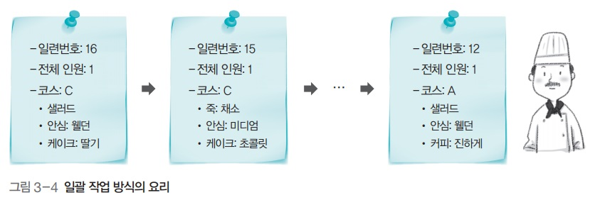

프로세스
프로세스
1. 프로세스
프로그램
- 저장장치에 저장되어 있는 정적인 상태
프로세스
- 실행을 위해 메모리에 올라온 동적인 상태
2. 작업 방식
일괄 작업 방식

- 레스토랑에 테이블이 하나만 있는 것
- 큐를 사용 해 주문서를 받은 순서대로 요리
- 한 손님의 식사가 끝나야 다음 손님을 받을 수 있음
- 효율이 떨어짐
시분할 방식

- 요리사 한명이 시간을 적절히 배분해 여러 요리를 동시에 함
- 주문 목록에 있는 주문서 중 하나를 가져다가 요리
- 모든 요리가 제공되면 주문 목록에서 삭제
시분할 방식에서의 상황 처리

3. 프로세스 제어 블록 (.)
개념
- 운영체제가 해당 프로세스를 위해 관리하는 자료 구조

포함 내용
- 프로세스 구분자: 각 프로세스를 구분하는 구분자
- 메모리 관련 정보: 프로세스의 메모리 위치 정보
- 각종 중간값: 프로세스가 사용했던 중간값
4. 프로세스와 프로그램의 관계
- 프로그램이 프로세스가 된다는 것
- 운영체제로부터 프로세스 제어 블록을 얻는다는 것
- 프로세스가 종료된다는 것
- 해당 프로세스 제어 블록이 폐기된다는 것
5. 프로세스의 네 가지 상태

-
생성 상태
- 프로세스가 메모리에 올라와 실행 준비를 완료
- 프로세스 제어 블록을 할당받음
-
준비 상태
- 생성된 프로세스가 CPU를 얻을 때 까지 기다리는 상태
-
실행 상태
- 준비 상태에 있던 프로세스 중 하나가 CPU를 얻어 실제 작업을 수행 중
-
완료 상태
- 실행 상태의 프로세스가 주어진 시간 동안 작업을 마침
- 프로세스 제어 블록 폐기
-
디스패치
- 준비 상태의 프로세스 중 하나를 골라 실행 상태로 바꾸는 CPU 스케줄러의 작업
-
타임아웃
- 프로세스가 자신에게 주어진 하나의 타임 슬라이스 동안 작업을 끝내지 못하면 다시 준비 상태로 돌아감
6. 프로세스의 다섯 가지 상태

-
생성 상태
-
준비 상태
- 프로세서 제어 블록은 준비 큐에서 기다리며 CPU 스케줄러에 의해 관리
- CPU 스케줄러는 준비 상태에서 큐를 몇개 운영할지, 어떤 프로세스의 프로세서 제어 블록을 디스패치 할지 결정
-
실행 상태
- 실제 CPU를 얻어 실행중
- 주어진 시간, 즉 타임 슬라이스 동안만 작업 가능
- 타임 슬라이스를 다 사용하면 타임아웃
- 실행 상태 동안 작업이 완료되면 exit(.)가 실행되어 프로세스 종료
- 실행 상태 중 I/O가 요청되면 CPU는 입출력 관리자에게 입출력을 요청하고 block(.) 실행
- 해당 프로세스가 대기 상태로 옮긴 후 CPU 스케줄러는 새로운 프로세스를 디스패치
-
대기 상태
- 대기 상태의 프로세스는 입출력장치별로 마련된 큐에서 기다림
- 입출력이 완료되면 인터럽트 발생, 해당 인터럽트로 깨어날 프로세스를 찾는 wakeup(.) 발생
-
완료 상태
- 프로세스가 종료되는 상태
- 코드와 사용했던 데이터를 메모리에서 삭제
- 프로세스 제어 블록 폐기
- 오류 등 비정상적인 종료가 일어나면 디버깅을 위해 코어 덤프 실행
-
디스패치
-
타임아웃
-
블럭
- 입출력이 완료될 때 까지 작업을 진행할 수 없기에 해당 프로세스를 대기상태로 옮기는 작업
-
웨이크업
- 입출력이 완료되어 인터럽트가 발생하면, 해당 인터럽트로 깨어날 프로세스를 찾아 그 프로세스의 제어 블록을 준비 상태로 이동
-
코어 덤프
- 종료 직전의 메모리 상태를 저장장치로 옮기는 것
요약

7. 기타 상태들
휴식 상태
- 유닉스 계열에서 프로그램을 실행하는 동안 Ctrl+Z를 누르면 볼 수 있음
- 프로세스가 작업을 일시적으로 쉬고 있는 상태
- 종료 상태가 아니기 때문에 원할 때 다시 시작할 수 있음
보류 상태
- 프로세스가 메모리에서 잠시 쫓겨난 상태
- 메모리가 꽉 차서
- 프로그램에 오류가 있어서 실행을 미루어야 할 때
- 바이러스와 같이 악의적인 프로세스라고 판단
- 매우 긴 주기로 반복되는 프로세스라서
- 입출력이 너무 지연될 때

- 보류-준비 상태
- 준비상태에서 보류되었으면 이쪽으로
- 보류-대기 상태
- 대기상태에서 보류되었거나
- 보류-대기 상태에서 입출력이 완료되어 인터럽트가 일어났다면 이쪽으로